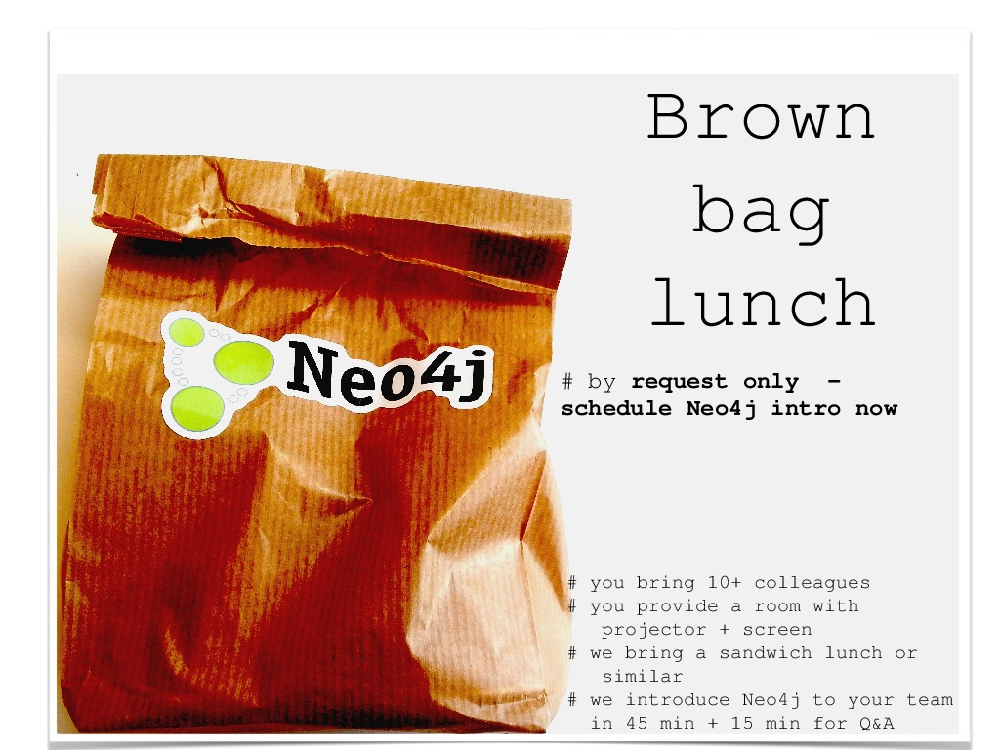

neo4j newsflash
Stefan Armbruster
e: stefan.armbruster@neotechnology.com
t: darthvader42
Neo4j 2.0.1 on Azure
- community edition available on VM depot
- using Ubuntu 12.04 as base
- nice setup instructions included
References:
http://blog.neo4j.org/2013/12/neo4j-20-ga-graphs-for-everyone.html http://graphsarecool.blogspot.de/2014/03/setting-up-neo4j-201-linux-vm-on.html
Spring Data Neo4j 3.0
- SDN 3.0.1 works with Neo4j 2.0.1
- Entity types represented with Labels
- Schema Indexes for @Indexed
- Derived finder methods
- data migration: not automatically
- some breaking changes in configuration
References:
http://blog.neo4j.org/2014/03/spring-data-neo4j-progress-update-sdn-3.html Talk from Nicki & Michael from GC London
Graph Gist Challenge Winners
- Graph Gist: living doc of a graph model
- includes text and a Neo4j console
- written in asciidoc + additional tags
- 65 submissions
References:
http://blog.neo4j.org/2014/02/graph-gist-winter-challenge-winners.html http://gist.neo4j.org/
Launch of online training
http://www.neo4j.org/learn/online_course
German Neo4j 2.0 book

Graph Databases - the book, free download

new offer: brown bag lunch
Events & Community
- Twitter: @Neo4jDE, @Neo4j
- http://www.neo4j.org/events
- 10.04. Training: Intro to Neo4j, Dortmund
- 24.04. Training: Intro to Neo4j, Milan
- 28.-30.04. NoSQLmatters Köln
- 08.05. IDC Direction Business Intelligence FFM
- 12.-16.05. JAX Mainz
- 22.05. Training: Graph Data Modeling, Frankfurt